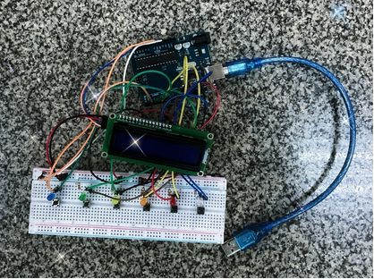
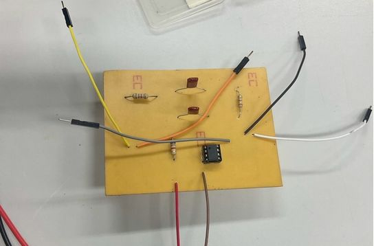
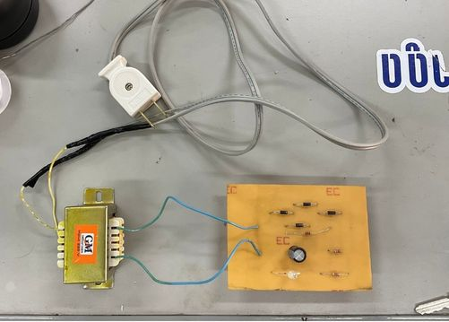

ผลงาน
โครงงานที่เคยมีส่วนร่วมในการพัฒนา
โครงงานที่ผ่านมา

วงจรกรองช่วงความถี่ผ่าน (Band-Pass Filter: BPF)
เพื่อให้ได้ศึกษาความรู้ในเรื่อง วงจรกรองความถี่แถบผ่าน (Bandpass Filter: BPF) ที่กรองความถี่เฉพาะช่วงที่ยอมให้สัญญาณสามารถผ่านได้ รวมถึงการศึกษาอุปกรณ์ R1,R2 ที่ใช้เพื่อกำหนดการตอบสนองความถี่และแบนด์วิดท์ กำหนดอัตราลดทอนของสัญญาณ ทำงานร่วมกับ C1,C2 ในการกำหนดความถี่กลาง ส่วน Rf จะควบคุมอัตราการขยายของวงจร ทำงานร่วมกับOp-Amp741 เพื่อเพิ่มแรงดันขาออก และ C1,C2 ใช้เป็นตัวกรองสัญญาณควบคุมช่วงความถี่ที่ต้องการให้ผ่าน สุดท้ายตัว Op-Amp741 ใช้ขยายสัญญาณ และช่วยรักษาเสถียรภาพของวงจร
- EasyEDA

วงจรเรียงกระแสแบบสะพานเต็มคลื่น (Full-wave Bridge Rectifier)
เพื่อให้ได้ศึกษาความรู้ในเรื่อง วงจรเรียงกระแสเต็มคลื่นแบบบริดจ์ ที่แปลงสัญญาณไฟฟ้ากระแสสลับเป็นสัญญาณไฟฟ้ากระแสตรง รวมถึงการศึกษาอุปกรณ์ที่ทำหน้าที่แปลง คือ ไดโอด วงจรเรียงกระแสจะใช้ไดโอดเป็นตัวเรียงกระแสไฟสลับที่มีคลื่นด้านบวกและลบให้เป็นไฟตรง ที่มีเฉพาะคลื่นด้านบวกหรือลบเพียงด้านเดียว หากแบ่งตามลักษณะของแรงดันอินพุต วงจรเรียงกระแสจะมีทั้งแบบ 3 เฟส และ 1 เฟส แต่ถ้าแบ่งตามลักษณะของแรงดันเอาต์พุต จะแบ่งได้ 2 แบบ คือ 1. วงจรเรียงกระแสครึ่งคลื่น (Half – Ware Rectification) และ 2. วงจรเรียงกระแสเต็มคลื่น (Full – Ware Rectification) ซึ่งวงจรที่เรานำมาศึกษาคือวงจรเรียงกระแสเต็มคลื่นแบบบริดจ์ เป็นวงจรที่มีการใช้ไดโอด 4 ตัว
- EasyEDA